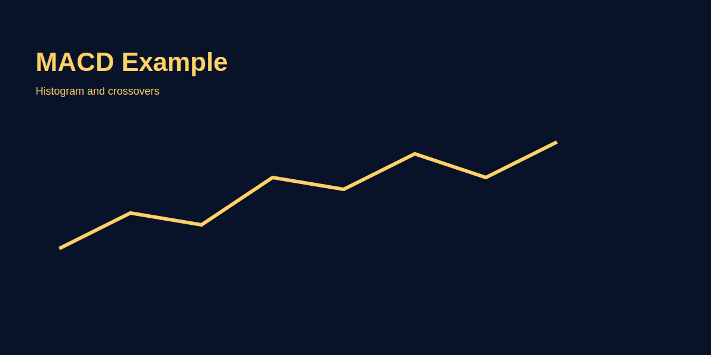

MACD Reality
Problem-based introduction
MACD popular hai lekin misuse bhi hota hai—crossover waiting vs divergence reading—donon ko samajhna zaroori hai. Is article mein MACD ka practical use GOLD examples ke sath bataenge.
Step-by-step explanation
- MACD components: MACD line, signal line, histogram—what each shows.
- Use MACD for momentum and divergence, not as sole timing signal.
- Look for histogram expansion on breakout for confirmation.
What is MACD and Its Components
MACD (Moving Average Convergence Divergence) = momentum oscillator based on two exponential moving averages. Three components:
- MACD Line: 12-period EMA minus 26-period EMA. Measures momentum by comparing fast vs slow trend.
- Signal Line: 9-period EMA of MACD line. When MACD crosses above signal = bullish. Below signal = bearish.
- Histogram: MACD minus signal line. Shows distance between MACD and signal. Expanding = momentum increasing. Shrinking = momentum decreasing.
Simple truth: MACD is a lagging indicator. By the time it signals, 30-40% of the move is done. Don't use MACD for precise entries; use it for momentum confirmation and divergence warnings.
MACD Crossover vs Real Trades: Why Crossovers Fail
Crossover Rule (Basic): When MACD crosses above signal line = bullish. When MACD crosses below signal = bearish. Sounds simple, but in practice:
- In choppy/ranging markets: MACD whipsaws. You buy on crossover, it reverses next candle, you stop out. Solution: Add volatility filter. If ATR < 40 pips, skip MACD crosses.
- In strong trends: Crossover is late. By the time MACD shows bullish crossover, price already moved 100+ pips. You enter after the move, risk overshooting. Solution: Use divergence instead (see next section).
- False breakouts: MACD can signal bullish divergence, but price still drops if daily trend is bearish. Solution: Always check higher timeframe trend first (daily, weekly) before entering.
Better approach: Use MACD as a filter (is momentum bullish/bearish?), not as a trade trigger. Real entries come from price action (support bounce, resistance break, volume surge).
MACD Divergence: The Real Edge (GOLD Examples)
Bullish Divergence: Price makes lower low (downtrend), but MACD makes higher low (momentum less negative). Signal: Downtrend weakening, reversal up likely. Example: GOLD drops from 2100 to 2080. MACD was -15 at 2100, now +5 at 2080. Histogram expanding up = momentum turning bullish. Price then rallies to 2110. Divergence worked.
Bearish Divergence: Price makes higher high (uptrend), but MACD makes lower high (momentum less positive). Signal: Uptrend weakening, reversal down likely. Example: EURUSD rallies from 1.1000 to 1.1050. MACD was +20 at 1.1000, now +8 at 1.1050 (lower high). Signal line flattening = momentum weakening. Price drops to 1.1010. Divergence worked.
Key principle: Divergences are not trade triggers by themselves. They're warnings that momentum is weakening. Wait for price action to confirm (bounce off support, break below moving average). Divergence + price action + volume = high-probability setup.
Histogram Expansion: Confirmation Tool
Histogram (MACD minus signal line) shows rate of momentum change:
- Expanding histogram: Momentum accelerating. If bullish candle + expanding histogram + price above MA = strong breakout. Size up.
- Shrinking histogram: Momentum decelerating. Even if MACD above zero, if histogram shrinking = trend losing steam. Reduce size or exit.
- Histogram reversal: If histogram was positive (above zero) and crosses to negative (below zero), trend failing. Exit longs.
Example: GOLD rallies with MACD bullish and histogram expanding = buyers strong. But if histogram starts shrinking (though MACD still above zero) = rally losing fuel. Exit before reversal. Histogram caught the weakening faster than MACD crossover would.
MACD Thresholds and Timeframe Adjustments
Default MACD (12/26/9) works for 4H and daily. Adjustments:
| Timeframe | MACD Settings | Use Case |
|---|---|---|
| 1H Scalp | 5/13/5 (faster) | Quick divergence spotting |
| 4H Swing | 12/26/9 (default) | Standard divergence, histogram |
| Daily Trend | 12/26/9 or 18/39/9 | Macro trend confirmation |
On XAU/USD, MACD bearish divergence on H4 while daily trend still bullish suggests caution—prefer to wait for price confirmation or reduced position size.
Image-based examples (mandatory)
Annotated chart showing divergence and proper confirmation.
Common Mistakes
- Trading every MACD crossover without context. You buy on MACD bullish crossover but daily trend is bearish. Counter-trend trade, you stop out. Always check daily bias first.
- Mistaking short-term noise for real momentum change. MACD can cross signal line 5+ times in a choppy market, each time giving false signal. Filter: Only trade crosses when price is trending (use volatility + MA filter).
- Ignoring the histogram while watching MACD line. MACD line above zero but histogram shrinking = momentum weakening. You're still long expecting continuation, but momentum already turning. Exit before reversal. Histogram is the early warning.
- Using MACD on 1-minute chart expecting reliable signals. Too much noise. MACD needs at least 4H timeframe for reliable signals. Use 4H or higher for trading.
- Not confirming divergence with price action. Bullish divergence on MACD but price doesn't bounce = divergence failed. Always wait for price confirmation (candle close above resistance, volume surge, etc.).
- Averaging down into losers based on "MACD oversold." MACD oversold doesn't mean reversal guaranteed. Trend can continue down for weeks while MACD stays oversold. Don't average based on oscillators alone.
Pro Tips
- Use MACD divergence on higher timeframes as a filter for lower-timeframe entries. Daily MACD divergence at resistance = caution on 4H longs. Daily MACD bullish at support = bias for 4H long bounces.
- Combine MACD with price structure for better edge. Bullish divergence at daily support + price bounces off support on 4H = high-probability long. Divergence alone = 50-60% win. Divergence + structure = 65-75% win.
- Watch histogram expansion/contraction for momentum strength. Expanding histogram = acceleration. Use it to size up winners. Contracting histogram = deceleration, take profits or reduce size.
- Use MACD zero line as a trend filter. MACD above zero = bullish bias. Below zero = bearish bias. Don't fade the trend when MACD is extended on one side.
- Backtest MACD divergence on your pair + timeframe. Run 30 divergence trades on EURUSD 4H. Count wins/losses. If <55% win, add price action filter. Repeat. Customize per instrument.
- Remember: MACD is lag + warning, not trigger. By crossover, move is done. Use MACD for momentum confirmation and divergence as early warning. Real entry: price action bounce/breakout.
Risk Warning
MACD signals can lag or give false divergence—manage size and use stop-loss.
SEO FAQs
- 1. MACD ka best timeframe kya hai?
- 4H or daily for swing trades. MACD needs at least 50+ candles for reliable calculation. 1H can work if instrument is volatile. Don't use 5M or 1M—too much noise, MACD unreliable on such short timeframes.
- 2. MACD divergence kitni reliable hai?
- Divergence is useful as early warning (momentum weakening) but not a trade signal alone. Combine with price action confirmation (bounce off support, break of resistance). Divergence + structure = 65-75% win rate. Divergence alone = 50-60%.
- 3. MACD crossover kab kaam karta hai?
- Crossovers work best in trending markets (ATR > 50 pips, price trending, not choppy). In range-bound markets, crossovers whipsaw (many false signals). Add volatility + trend filter: Only trade MACD cross if ATR high + price above/below MA.
- 4. Histogram expanding vs shrinking: Kaunsa important hai?
- Histogram is crucial. Expanding = momentum accelerating (add to winners). Shrinking = momentum weakening (reduce size, take profits). Even if MACD line is bullish, shrinking histogram = trend losing steam. Exit before MACD reversal.
- 5. MACD settings kab change karein?
- Default (12/26/9) works for 4H+. For 1H: use 5/13/5 (faster). For daily: 12/26/9 is fine. For weekly: 18/39/9 (slower). Adjust based on noise level—if MACD whipsaws too much, increase periods.
- 6. MACD zero line kya importance hai?
- Zero line separates bullish (above) from bearish (below). Use it as a trend filter. MACD above zero = bullish bias, don't short. Below zero = bearish bias, don't long. Fighting the zero-line direction = low probability.
- 7. Overbought/oversold MACD kya matlab?
- MACD has no fixed overbought/oversold (unlike RSI). But extreme MACD (far above/below zero) can signal overextension. Combine with divergence: Extreme MACD + bearish divergence = reversal setup. Extreme MACD alone = no action (trend can continue).
- 8. MACD crossover entry: Stop kaha pe laga?
- If buying on bullish MACD crossover, stop below recent swing low (not at the crossover). If swing low is 50 pips away, crossover is risky (stop is too wide). Instead, wait for price to pull back + bounce, then size accordingly. Better risk-reward.
- 9. MACD daily vs 4H: Dono dekhun?
- Yes. Daily MACD = bias (bullish/bearish above/below zero). 4H MACD = entry signal (divergence, crossover). Example: Daily MACD bullish + 4H divergence at support = high-probability long. Daily bearish + 4H divergence = skip or reduce size.
- 10. MACD backtest kaise karun?
- Simple test: Take 30 MACD divergence setups on your pair/timeframe. Record entry, stop, target, result. If win rate < 55%, add price action filter (require support/resistance bounce). Re-test. Iterate until consistent (55%+ win rate).